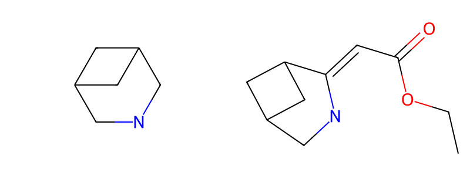

补查1：左为原核心，右为源端必要条件

表达式与实际执行状态
{
"family": {
"id": "7a5f0e7049d2de711eb6d79e",
"parent_id": "e30c64e8c8c80fcb12da1662",
"layer": "core",
"core_smarts": "[#6&A&+0:7]1-[#7&A&+0:8]-[#6&A&+0:9]-[#6&A&+0:15]2-[#6&A&+0:16]-[#6&A&+0:17]-1-[#6&A&+0:18]-2",
"target_atoms": [
6,
7,
8,
14,
15,
16,
17
],
"rule_id": "complete_ring_system",
"rule_version": "organic-reference-1.5",
"r_constraints": [
{
"position": 0,
"requirement": "required",
"category": "any",
"exact_fragment": "CCOC(=O)C=[*:1]",
"max_carbons": null
}
],
"equal_r_positions": [],
"core_topology_policy": "forbid_extra_internal_edges",
"allow_extra_substitution": true,
"use_generic_matchers": true,
"relation": "structural_family",
"description": "根据已核验命中补查核心位点 [0]；保留其他位点变化空间",
"trigger": "missing_attachment_block"
},
"source_prefilter_smarts": "[#6&A&+0:7]1(-[#7&A&+0:8]-[#6&A&+0:9]-[#6&A&+0:15]2-[#6&A&+0:16]-[#6&A&+0:17]-1-[#6&A&+0:18]-2)=[#6]-[#6](-[#8]-[#6]-[#6])=[#8]",
"states": [
{
"family_id": "7a5f0e7049d2de711eb6d79e",
"role": "product",
"stage": 0,
"selection_scope_id": "de5baf07341160ba1f7ce8f7",
"complete": true,
"stream_exhausted": true,
"enumeration_kind": "core_filtered_knn512_with_bounded_input_core_absence_seeds_individual_verification_required_required_single_port_r_prefilter",
"matching_enumeration_complete": true
},
{
"family_id": "7a5f0e7049d2de711eb6d79e",
"role": "product",
"stage": 1,
"selection_scope_id": "f7b20ed393cee07d6fcd7894",
"complete": true,
"stream_exhausted": true,
"enumeration_kind": "indexed_side_substructure_session_cursor_without_global_sort_or_size_window_required_single_port_r_prefilter",
"matching_enumeration_complete": true
}
]
}